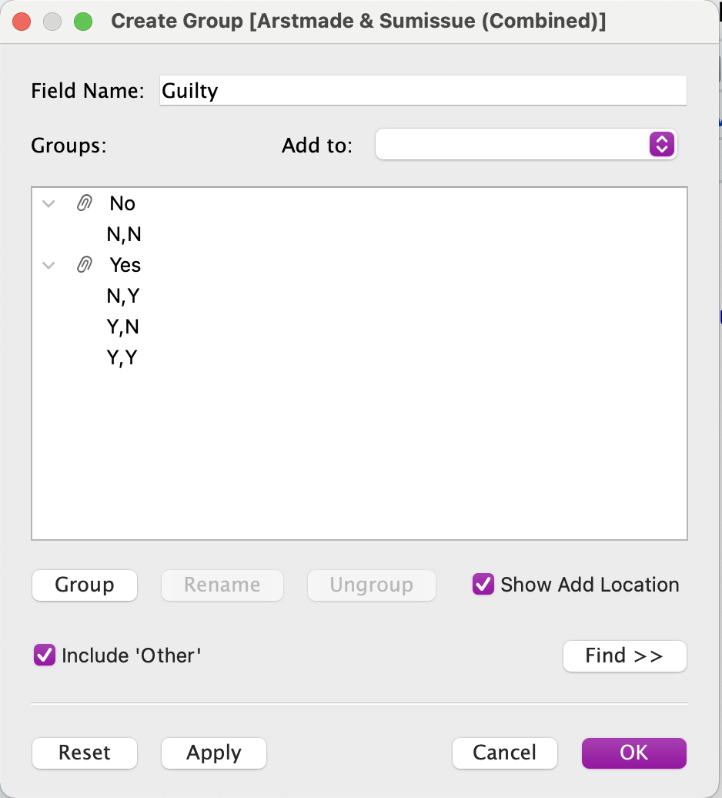
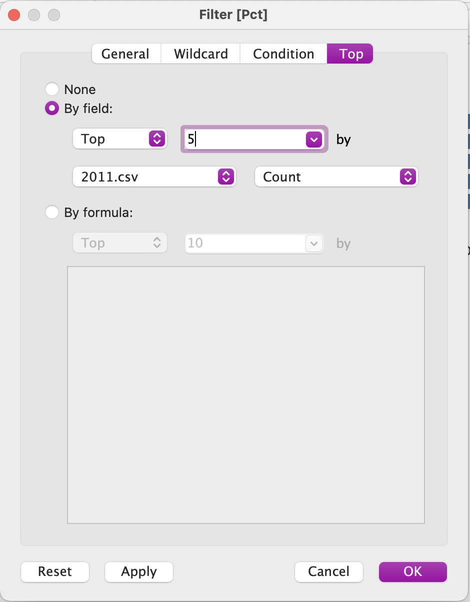
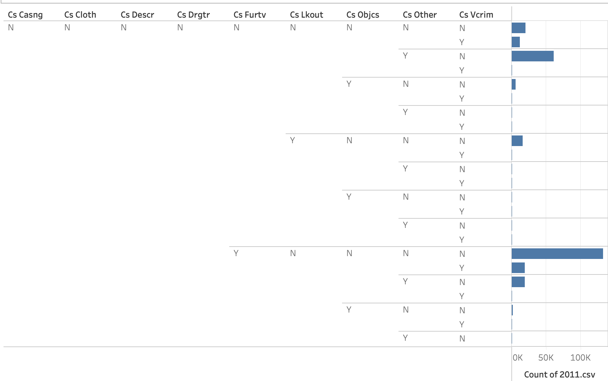

Lab 4: Policing Justice
Overview
In this lab, you will work through a series of exercises to visualize data regarding discriminatory policing practices in New York City in the early 2011 - the height of stop and frisk. Specifically, you will learn how to create various bar plots that aggregate individual level data by various categories.
The Dataset
Every time an NYPD officer stops an individual based on “reasonable suspicion” that they committed or were about to commit a crime, the officer is required to fill out a form documenting information about the stop, including the reason for the stop, the demographics of the individual stopped, any actions taken during the stop, and any contraband found on the individual stopped. These reports get aggregated into a database that became available for public download in 2008 as a result of considerable advocacy efforts by the New York Civil Liberties Union in the wake of high-profile police shootings.
In the 1990s, crime reduction strategies implemented in major cities across the country demanded the production of statistics to generate evidence of policing effectiveness. With certain consequences tied to failures to demonstrate reductions in crime, the policies institutionally incentivized data manipulation - an issue colloquially referred to as “juking the stats.” Despite these data quality issues, the publication of the data in 2008 showed an incredible increase in the number of police stops over a 5-year period, and by 2011, the number of stops had increased 700% from when data collection began in 2002. 88% of the time the individuals stopped were found innocent. In the following years, the data became integral in the New York District Court case Floyd, et al. v. City of New York, et al., which ultimately ruled that stop and frisk was being carried out unconstitutionally in New York City and led to a considerable scaling back of the practice. The New York Civil Liberties Union continues to publish annual reports leveraging the data to assess the current state of discriminatory policing in NYC.
Today, we are going to analyze 2011 stop and frisk data.
Instructions
Part 1: Explore the data dictionary
Download the data dictionary here. After downloading the zip file, open the Excel file for the 2011 SQF File Spec. Check out both tabs of the spreadsheet: the first defines variables in the dataset, and the second lists the values that might appear in those variables. Note how each variable maps onto a field on the UF-250 form.

Image from Dan Nguyen: http://blog.danwin.com/request-nypd-form-uf250/
Part 2: Download the 2011 SQF Data
Download the 2011 SQF Data here.
Part 3: Data Analysis
Open Tableau, and create a new workbook called sqf_2011. Click “Connect to Data” and the 2011.csv file. Note that this is the largest dataset we will work with this semester, and it may take time to load in Tableau.
In the last lab, we created a series of column plots. In that lab, we supplied a categorical variable for one axis and a numeric variable to set the height of the bar to on another axis. In that lab, we could do so because we were working with data that had already been aggregated. Each row wasn’t a death; it was a count of deaths for a particular demographic group or year.
In this lab, we don’t have numeric variables to set the height of the bar to. This is because we have unaggregated individual data; each row represents one stop. In this case, we want to do the aggregating. If each row represents one stop, we want to count the number rows (or stops) along a number of different categories.
To do so, we are going to create bar plots. With bar plots, we don’t supply the height of the bar. Instead, the height of the bar gets set to a count of each observation in a category.
Question
Create a new worksheet called “NYPD Stops per Race, 2011”. Name the tab “by_race”.
Drag the Race pill to Rows. Edit the aliases based on the values in the data dictionary. After this, drag the 2011.csv (Count) pill to Columns. Recall from a previous lab that this variable is a count of the all rows in the dataset. Since each row in this dataset is one stop, using this variable counts the numbers of stops per category.
Sort the bars from largest to smallest, and edit the axis labels to something more meaningful.
- How can we summarize what we see in this plot quantitatively?
- How might we interpret what we see in this plot?
- What might it be evidence of?
Question
Create a new worksheet called “Percent NYPD Stops Resulting in Arrest or Summons per Race, 2011”. Name the tab “per_guilty”.
Drag the Race pill to Rows. After this, drag the 2011.csv (Count) pill to Columns.
Now we need to drag over a variable that indicates whether the individual was found guilty. …but there are actually two variables for this: Arstmade and Sumissue, and each have possible values of ‘Y’ or ‘N’. We want to combine this into one variable that return ‘Y’ if either Arstmade and Sumissue are ‘Y’ and ‘N’ otherwise. Highlight both Arstmade and Sumissue with the Cmd/Cntl key, and then click on one pill > Create > Combined Field.
Click on the newly created Combined Field > Create Group. Change the name of the field to “Guilty”, add a group for the “N,N” value called “No”, and change the name of the remaining group to “Yes”.

Drag Guilty onto the Rows field behind Race.
This tells us the total number of stops that resulted in an arrest or summons per race, but since we know that certain races are disproportionately stopped, we really want to see the percentage of stops that result in an arrest or summons per race.
To do this, we are going to add a Table Calculation to these plots such that each bar displays a “Percent of Total”. Adding this calculation does not change anything about the underlying data; it only changes how the data gets displayed.
Question
Click on 2011.csv (Count) in the Column field > Table Calculation > Percent of Total. Note that, since we are displaying a few different values on this plot, there are a number of different values that can serve as a denominator for the calculated percentage. We want to know the percentage deemed guilty out of all stops, so we are going to click on 2011.csv (Count) again > Compute Using > Guilty.
Finally, right click on “No” in the plot, and then select “Hide”. Note that this locally filters the data, keeping the original data source the same.
Sort the bars from largest to smallest, and edit the axis labels to something more meaningful.
- How can we summarize what we see in this plot quantitatively?
- How might we interpret what we see in this plot?
- What might it be evidence of?
In the last exercise, we created a local filter on the data. When applying local filters, the data remains the same in the original Data Source, but we hide certain variables from view in our visualizations. This is different from applying a global filter. With a global filter, we filter the original Data Source such that only a subset of rows get considered in our analysis/visualizations.
Why does this difference matter? It mostly matters when we create table calculations on our data that include a denominator (e.g. Percent of Total). If we apply a global filter to such data, the denominator changes - it becomes only the data remaining after the original data source is filtered. …but if we apply a local filter to such data, the denominator remains the same because the original data source doesn’t change. The only thing that changes is our view of that data.
Question
Create a new worksheet called “Percent NYPD Stops Resulting in Frisk per Race, 2011”. Name the tab “per_frisked”.
Repeat the steps above to create a bar plot that shows the percentage of stops that resulted in a frisk per race. Note that you do not have to create a grouped variable this time around because you have all of the information you need about frisks in the variable Frisked.
- How can we summarize what we see in this plot quantitatively?
- How might we interpret what we see in this plot?
- What might it be evidence of?
Question
Create a new worksheet called “Percent NYPD Frisks Resulting in a Weapon Found per Race, 2011”. Name the tab “per_wpn”. Drag Frisked to the filters panel, and filter to ‘Y’ so that we are only considering stops that resulted in a frisk. Note, unlike the local filters we applied to the earlier plots by hiding certain values, this is a global filter that filters the original data source.
Repeat the steps above to create a bar plot that shows the percentage of frisks that resulted in a weapon found per race. Note that you do have to create a grouped variable this time around as there is no existing variable for “Weapon found”. You will need to combine the variables: Pistol, Riflshot, Asltweap, Knifcuti, Machgun, Othrweap such that if any are ‘Y’ the data returns ‘Y’ and otherwise the data returns ‘N’.
- How can we summarize what we see in this plot quantitatively?
- How might we interpret what we see in this plot?
- What might it be evidence of?
Question
Create a new worksheet called “NYPD Precincts with the Most Stops, 2011”. Name the tab “top_5_pct”. Convert Pct from a Measure to a Dimension. Drag Pct to Rows and 2011.csv (Count) columns. Drag Pct to Filters and select ‘Top’. Configure the filter to display the top 5 according to 2011.csv Count.

Sort the bars from largest to smallest, and edit the axis labels to something more meaningful.
Question
Create a new worksheet called “NYPD Precincts with the Highest Percentage of Frisks, 2011”. Name the tab “pct_frisks”. Based on what you’ve learned, create a bar plot that shows the percentage of stops that resulted in a frisk for each precinct.
Sort the bars from largest to smallest, and edit the axis labels to something more meaningful.
Now let’s say that we want to analyze the documented reasons for a stop. Officers are required to have reasonable suspicion that a crime was committed, so maybe we want to analyze what their reasons for stopping were. You’ll notice that there isn’t one variable that documents the reason for the stop. This is because on that section of the UF-250 form (entitled “What Were Circumstances that Led to Stop?”), the officer is presented with series of checkboxes. The officer can select multiple boxes. Each option is its own variable in this dataset with a ‘Y’ or ‘N’ option.
We can’t just drag all of these variables onto the plot because Tableau will combine every ‘Y’/‘N’ option across all variables.

Instead, we want to pivot these variables such that the field names will become one variable, and the values associated with them ‘Y’/‘N’ will become another variable.
Create a new worksheet called “NYPD Reason for Stops, 2011”. Name the tab “stop_reason”. Using the Cmd/Cntl button select all variables starting with Cs ... Right click on the select pills > Transform > Pivot.
Drag Pivot Field Names onto the Rows field and 2011.csv (Count) onto the Columns field. Convert the counts to a percent of total, computed using the Pivot Field Values. Locally filter ‘N’ from the plot, using “Hide”.
Sort the bars from largest to smallest, and edit the axis labels to something more meaningful. Edit the aliases to the values under the “What Were Circumstances that Led to Stop?” on the UF-250 form.
- How can we summarize what we see in this plot quantitatively?
- How might we interpret what we see in this plot?
- What might it be evidence of?
Part 5: Reflection
How might we summarize what we just learned into a factual claim?
Note that this data is often cited as evidence of racial profiling in policing. …but some also counter that stop and frisk policies led to the greatest reduction of crime rates in NYC’s history. They reframe racial profiling as proactive policing. Here’s one article that makes such a counter-claim.
In small groups, read through this article and try to identify the arguments that the author uses to counter the claims regarding racial profiling. How would you respond to their counter-arguments? What evidence could you provide in your response?